WordPress is a free and open-source Content Management System (CMS) based on PHP and MySQL. WordPress was released on May 27, 2003 by Matt Mullenweg and Mike Little.
To install WordPress locally you will need MAMP (Mac) or WAMP/XAMPP (Windows or other), installed also. This will allow you to have PHP, MySQL and an Apache server available.
Next, go to https://wordpress.org/ to download the latest version of WordPress. This will be in the form of a .zip file which will need to be extracted.
The folder will be named wordpress once downloaded, but feel free to rename it to something else if you wish.
Once WordPress has downloaded, locate the folder where MAMP/WAMP or XAMPP has been installed. Within this directory/folder should be a htdocs folder. This is where we want to place our downloaded WordPress folder/directory. For the purpose of our examples, we will be renaming our WordPress directory/folder as wp-project.
In the MAMP/WAMP or XAMPP control panel, you will need to start the Apache server and MySQL database.
To begin the setup, start MAMP/WAMP or XAMPP, open a browser and point the URL to: http://localhost/wp-project
wp-project is the name of our WordPress project - in this example.
This will open the wp-admin/setup-config.php page. Select the language and click the Continue button.
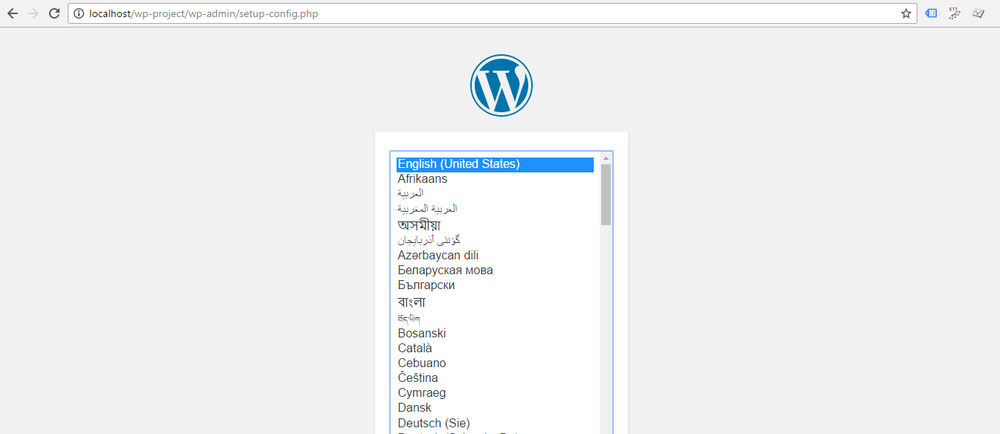Next, follow the instructions as we will now be setting up the database configuration in the wp-config.php file. Click the Let's go! button to continue.
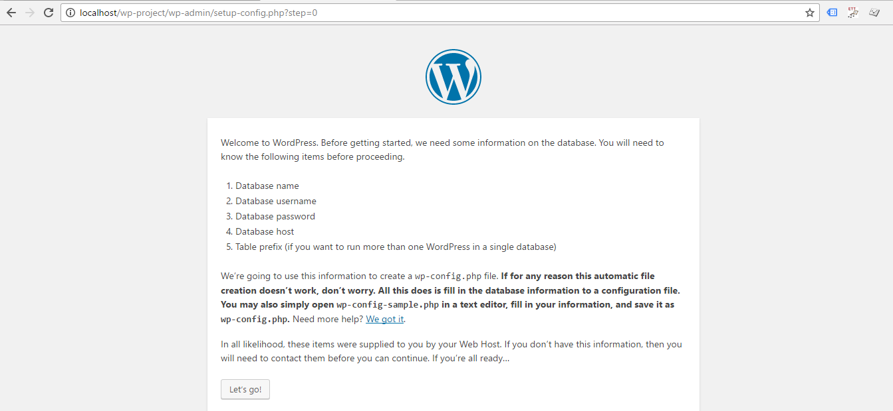You will need to create a database in the MySQL database so we can setup our WordPress installation. To do this, you can use PHPMyAdmin. Open a browser tab/window and enter the URL: http://localhost/phpmyadmin.
Click on the Databases tab/link and enter the name of the database you want to create in the input field. For our example project, the database is to be named wp-project.
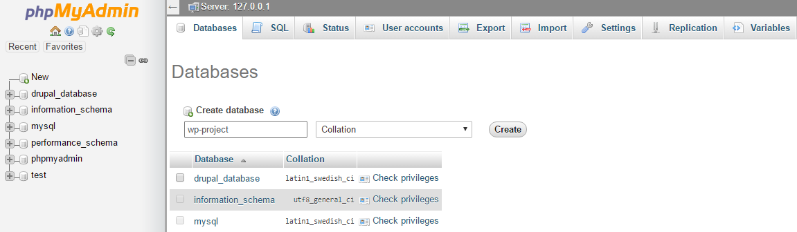Click the Create button.
The database connection details need to now be entered. Once entered, click the Submit button.
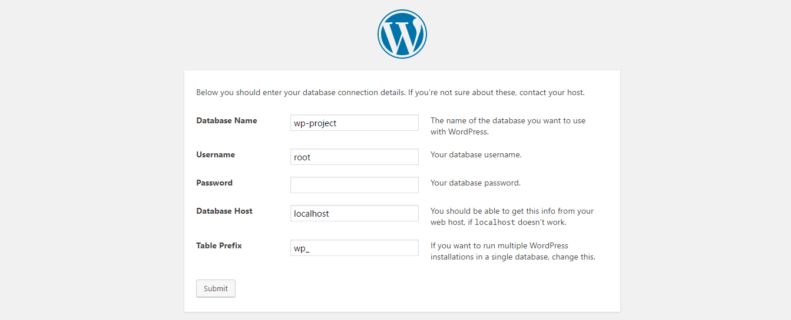Unless changed, the default MAMP/WAMP or XAMPP Username is: root and the Password remains empty with no input. The database host should be localhost. The Database Name can be changed to what you would like, and the Table Prefix field can also be changed, but we will keep it as wp_ for now (unless you have multiple WordPress installations, then you may want to change it for each one).
The database setup should now be complete. If an issues occur with the connection, close the browser and follow the setup steps once again. Click the Run the install button.
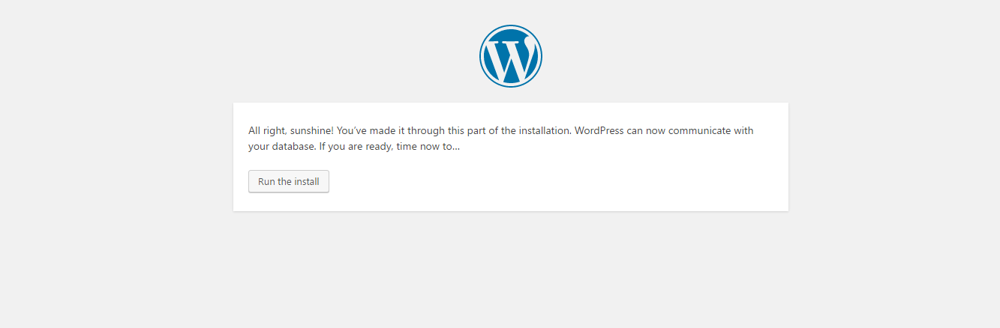Follow the on-screen instructions to complete the installation. Click the Install WordPress button to complete the installation.
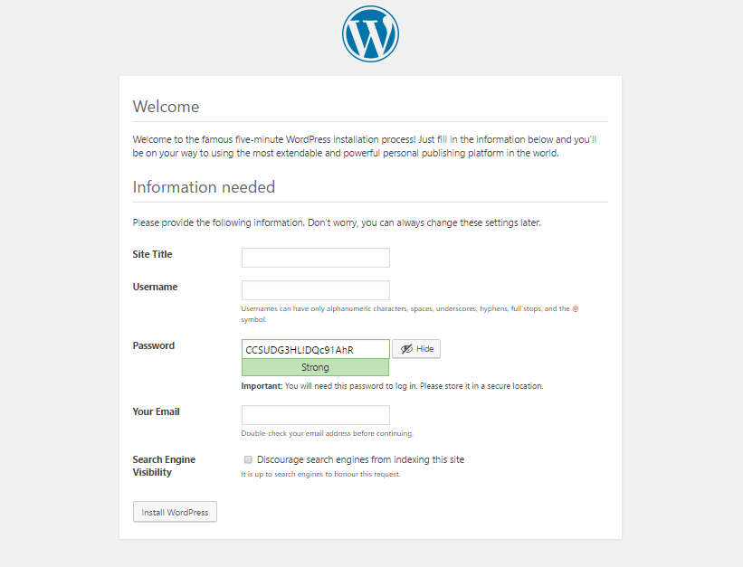Remember you can change the Password and Username fields to something more simple should you want to test locally, but this is not recommended for production when security is a key concern. For our example project, the Username is: username and the Password is: password
The installation is a success. Click the Log In button to log in with your username and password.
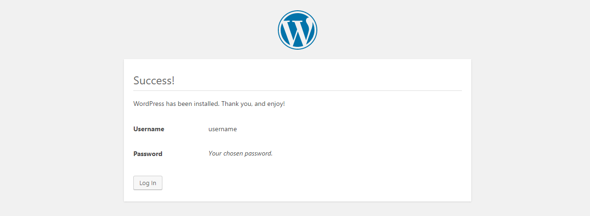The login screen:
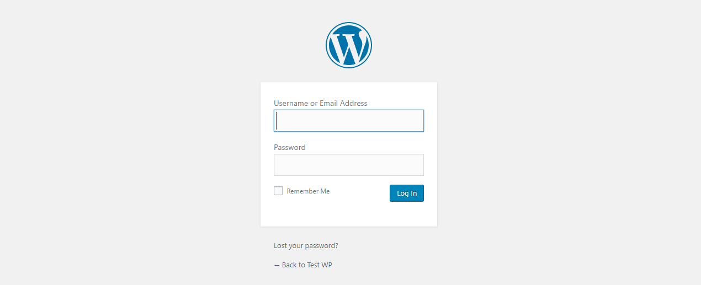Once logged in, you will see the WordPress dashboard.
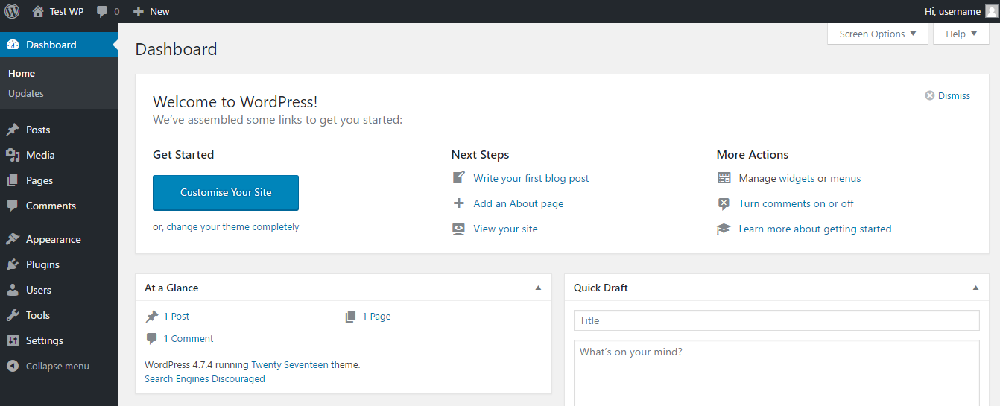When WordPress is installed, any configuration settings (such as database settings), can be found within the wp-config.php file.
To login to WordPress, open the browser and point the URL to: http://localhost/wp-project/wp-admin. Enter your Username and Password to complete the login process.
This will now display the dashboard.
In WordPress, you can put content on your site as either a post or a page. Posts are usually for content you want to display in reverse chronological order. In contrast, pages are for content such as About or Contact pages. Pages are usually used to present timeless information about yourself or your site.
To create a new page, login to the WordPress dashboard and navigate to Pages / Add New
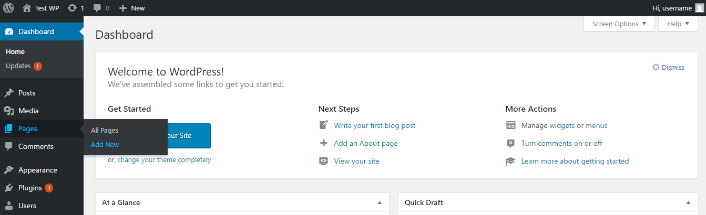On the Add New Page page, enter a title in the first input field followed by text you wish to appear on the page itself as copy in the larger textarea below. For this example, we will create a simple About page.
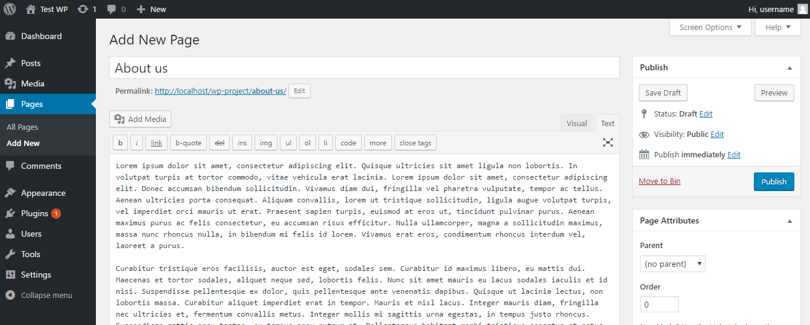Click the Publish button to create the page.
The About page has been created. Click on the Pages / All Pages menu/tab item in the sidebar menu of the WordPress dashboard to see all pages within the website.
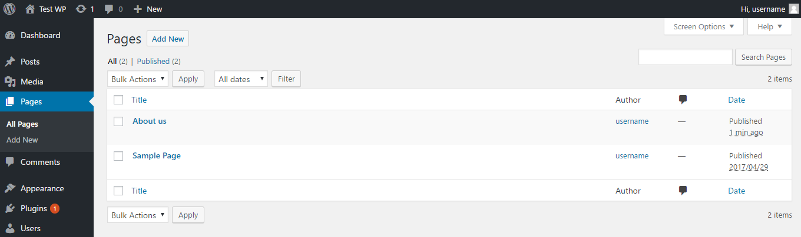When you install WordPress, a Sample Page will be created. This has been removed to keep things simple to just leave the About us page.
To view the page itself, you can either select the page from the list and click View Page from the Dashboard header or navigating to the Permalink URL: http://localhost/wp-project/about-us/
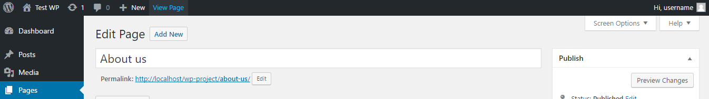The initial About us page looks like this:
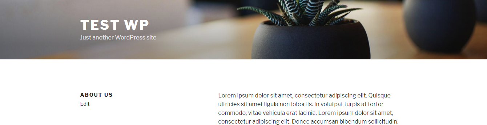Almost everything in WordPress is generated dynamically, including Pages. Everything published in WordPress - Posts, Pages, Comments etc - is stored in the MySQL database.
If you make any changes to a page, remember to click the Update button within the Publish panel in the WordPress dashboard.
We are now going to create a Post. This is a very basic process within WordPress. Posts are entries that display in reverse order and usually have comment fields beneath them. This makes posts ideal for blogs and other similar features.
To begin, login to your WordPress dashboard and go to Posts / Add New.
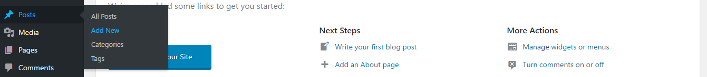On this page you will see the WordPress posts editor. The most important parts of this page are:
Once you enter the content of your post in WordPress, you need to publish it. Publishing brings your post onto your website. Click the Publish button to publish your post.
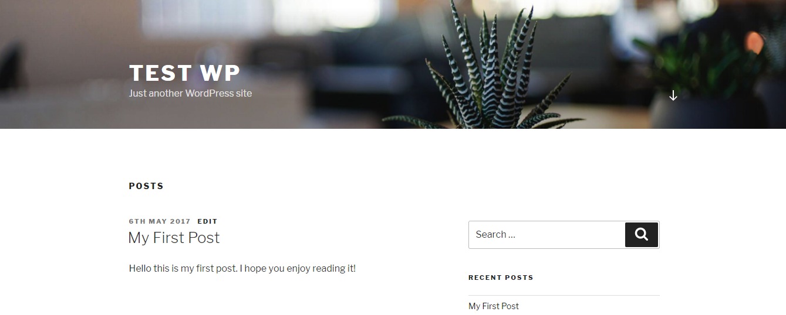If you view All Posts, you will find an example post called Hello world! This can be removed if you wish as was created when WordPress was installed.
The post created should now be displayed on your homepage. The homepage can either be viewed by clicking the Test WP / Visit Site on the main navigation bar of the WordPress dashboard, or visiting the URL of: http://localhost/wp-project/ in the browser.
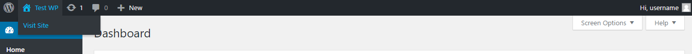For both pages and posts, when a title is added into the title field when a post or page is created, WordPress will clean up the title and generate a user-friendly URL called a slug. This will compose a permalink for the page or post created.
WordPress can hold and display many different types of content. Any content added to a WordPress site, usually has a post type. A post is an example of a post type, as are pages. WordPress has several default post types available when installed. Post types are installed within the wp_posts table within the MySQL database. Posts themselves are placed within a column of this table called post_type.
Post - in WordPress, the post type of post is typically used for blogs. Posts are normally displayed in reverse order by time with the newest post first. Posts are also used for creating feeds.
Page - similar to posts, but a page is a post type that is not displayed based on time and can use different page templates.
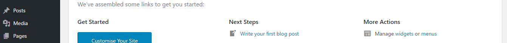You can see the default post types of Posts and Pages, listed in the sidebar of the WordPress dashboard.
Custom Post Types are new post types that you can create. A Custom Post Type (CPT) is nothing more than a regular post and will be added to the post_type column (along with any other post type) as a new value in the database. You can create as many custom post types as you wish. Since WordPress evolved from a blogging platform, the term Custom Post Types, has stuck, even though - as mentioned before - they are not used just for posts.
A Custom Post Type can be added to WordPress by using the register_post_type() function. The post_type column in the database is limited to 20 characters and is currently a VARCHAR field of that length.
WordPress comes with built-in support for displaying Custom Post Types. When a Custom Post Type is created, it will be added to the sidebar (admin panel) in the WordPress dashboard as a separate menu item with it's own post list and Add New page. From here you can then add and view posts within the post type created.
An example of a Custom Post Type may include products for online stores, property listings for an estate agent - just a few examples of many you can create.
To create a Custom Post Type, it is usually recommended to create a plugin, although you can also use the functions.php file within your theme directory - wp-project/wp-content/themes. As we are currently using the twentyseventeen theme in the current WordPress install, the file will be located in this theme directory.
When making changes to the functions.php file, do not make any changes to the code currently there. If you want to create a Custom Post Type (CPT), this can be placed at the top or bottom of the file.
Within the functions.php file, add the following code to the bottom of the file, to create a Custom Post Type (CPT) called Products.
// Custom Post Type function
function create_products_cpt () {
register_post_type( 'products',
// CPT options
array (
'labels' => array (
'name' => __( 'Products' ),
'singular_name' => __( 'Product' )
),
'public' => true,
'has_archive' => true,
'rewrite' => array ( 'slug' => 'products' )
)
);
}
// Add the CPT to the theme
add_action( 'init', 'create_products_cpt' );
Save the functions.php file and the Custom Post Type will be added to the sidebar within the WordPress dashboard.
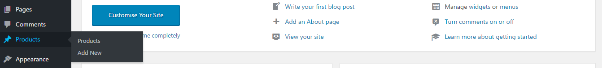Because the Custom Post Type has been added to the functions.php file within a theme, should you change theme, the Custom Post Type will not be available. A plugin maybe a more suitable option to use a CPT across multiple templates.